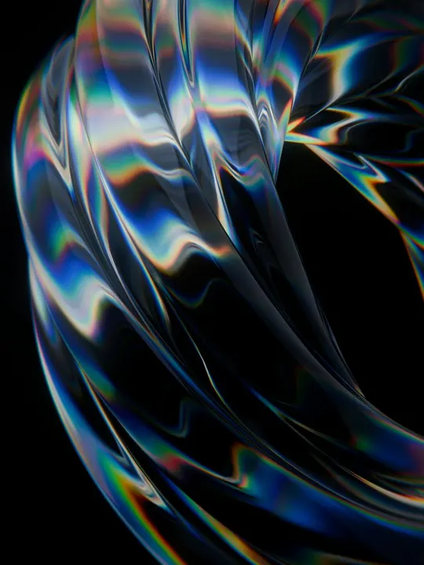
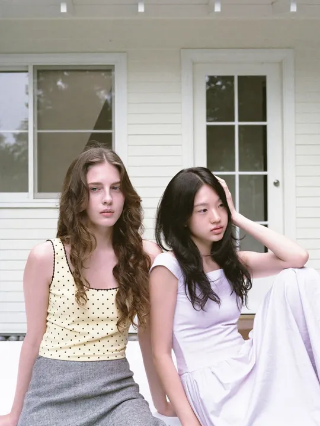
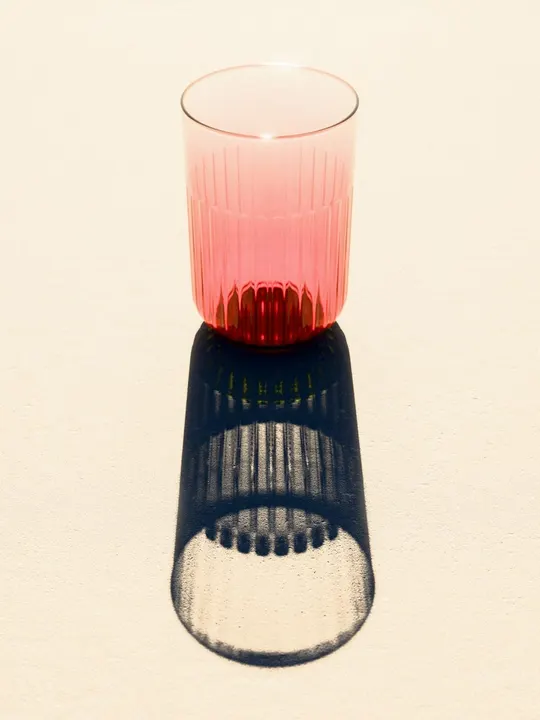
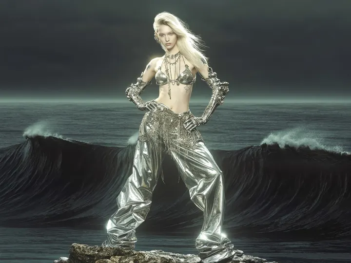
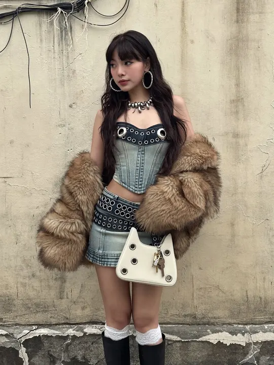

生图
全部 36生成中 1需要核对 1
扣费记录
生成中
02:14
雨后的老街，霓虹倒影，胶片质感
水母造型的台灯，玻璃丝透出青蓝的光，桌面杂物虚化
做同款

没生成出来
模型没有返回图片，这次没有扣费。可以换个说法再试。
一只穿宇航服的柴犬站在月球上，背景是地球
改一改再试



结果未知
连接中断了，没拿到结果，可能已经扣费。请到主站账单里按请求 ID 核对。
请求 ID · req_8f2c41…a91e
去主站核对 复制 ID
